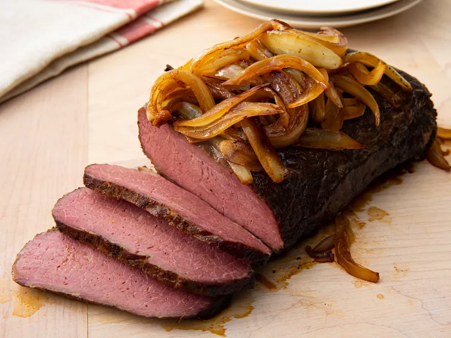

Braised Corned Beef Brisket

Corned Beef is a type of beef brisket cured in salt. This recipe will sear the corned beef brisket in a hot skillet to be braised all day in delicious garlic and onions for a mouthwatering, flavorful beef brisket.
Ingredients
- 1 flat-cut corned beef brisket
- 1 tablespoon browning sauce
- 1 tablespoon vegetable oil
- 1 sliced onion
- 6 sliced cloves garlic
- 2 tablespoons water
Steps
- Preheat oven to 275 degrees F.
- Brush brisket with browning sauce on both sides.
- Heat vegetable oil in a large skillet over medium-high heat and brown brisket on both sides in the hot oil, 5 to 8 minutes per side.
- Place brisket on a rack set in a roasting pan. Scatter onion and garlic slices over brisket and add water to roasting pan. Cover pan tightly with aluminum foil.
- Roast in the preheated oven until meat is tender, about 6 hours.